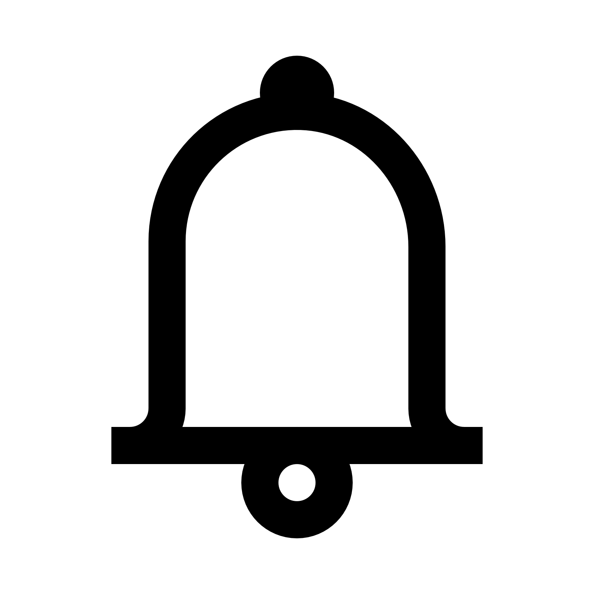

<body>
    <mat-toolbar>
        <button mat-icon-button class="example-icon" aria-label="Example icon-button with menu icon" (click)="toggleSidebar()">
          <mat-icon>menu</mat-icon>
        </button>
        <div><span></span><span>Keep</span></div>
        <span class="example-spacer"></span>
        <span class=" searchBar">
        <span></span>
         <input type="text" value="" class="inputBox">
        </span>
        <span></span>
        <span style="rotate: 90deg;"></span>
        <span></span>
        <span></span>
        <div class="userProfile">
          <span></span>
          <span></span>
        </div>
      </mat-toolbar>

    <!-- sideBar -->


    <div class="sidebar" [class.open]="isSidebarOpen">
      <mat-nav-list>
        <a mat-list-item href="#"><span></span><span>Notes</span></a>
        <a mat-list-item href="#"><span></span><span>Reminder</span></a>
        <a mat-list-item href="#"><span></span><span>Notes</span></a>
        <a mat-list-item href="#"><span></span><span>Edit Labels</span></a>
        <a mat-list-item href="#"><span></span><span>Archive</span></a>
        <a mat-list-item href="#"><span></span><span>Trash</span></a>
      </mat-nav-list>
    </div>


  <!-- sidebar -->  
  <!-- <mat-sidenav-container class="example-container">
    <mat-sidenav #sidenav mode="side" opened="true">
     
    </mat-sidenav>
  </mat-sidenav-container> -->
</body>
